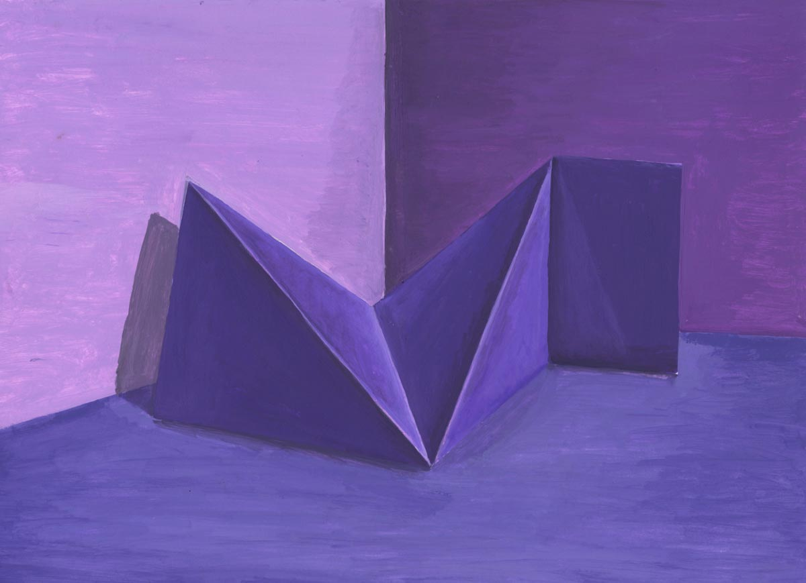
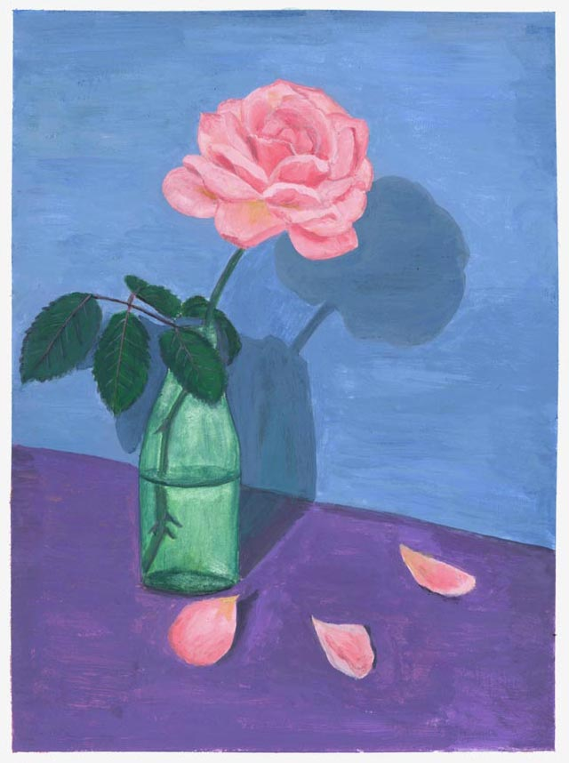
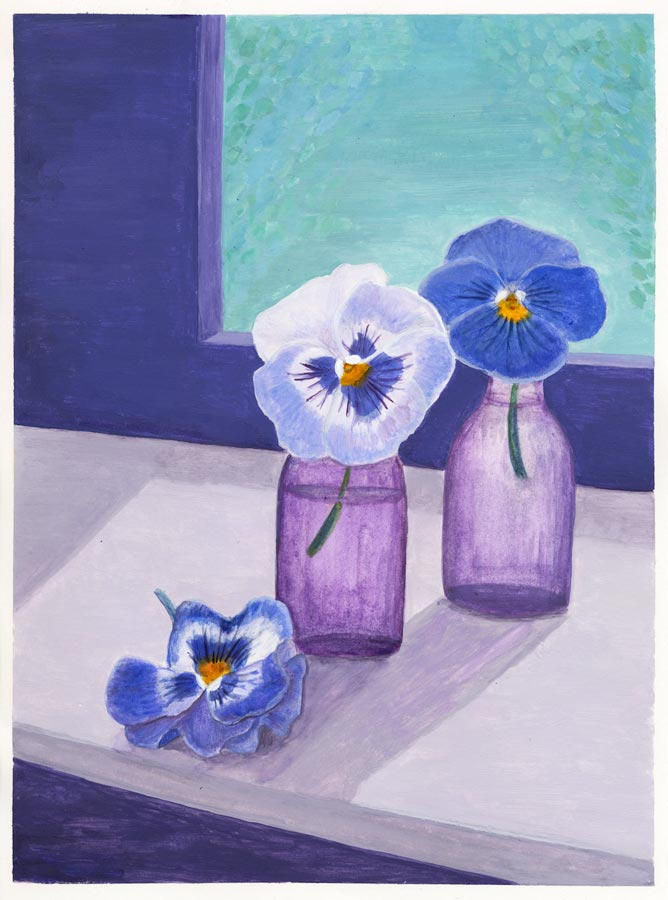

1
Medium: Acrylic on Bristol Paper (9''x12'')
This is my first acrylic painting :) From a white paper sculpture that I folded, I worked on a color scheme and used acrylic paint to capture the shape, lighting, especially the sharp edge of the model, and bring all colors into harmony.
2
Medium: Acrylic on Bristol Paper (9''x12'')
I arranged a rose in a bottle and worked on my still life painting with acrylic paint. A rose in winter.
3
Medium: Acrylic on Bristol Paper (9''x12'')
As a flower lover, I found these lovely pansies a great inspiration to paint.